简介
CFD 仿真流体（液体或气体）穿过或绕过物体。分析可能非常复杂。例如，一种计算可能包含传热流、混合流、不稳定流和可压缩流。不使用某种仿真工具预测此类流对产品性能的影响可能非常耗时和代价高昂。
打开插件
在菜单栏【工具-插件】找到SOLIDWORKS Flow Simulation插件，勾选启用该功能。
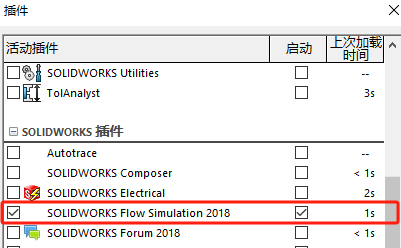操作界面
熟悉Flow simulation的操作界面
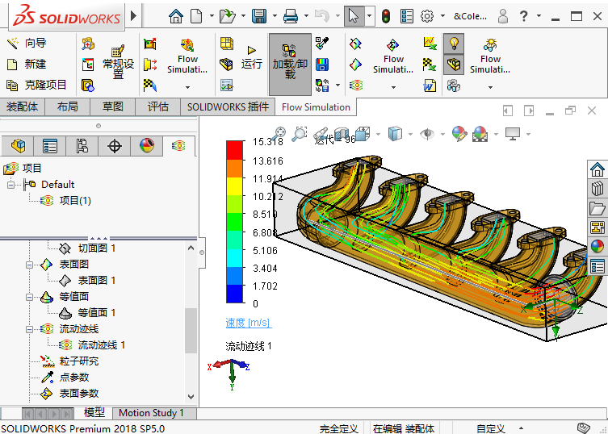创建流体分析项目
本章将学习如何使用向导来创建一个 SOLIDWORKS Flow Simulation 项目。 在设置项目之前， 需要先学习如何正确准备用于分析的模型。 之后将运算这个仿真项目并学习如何解释计算所得结果。
案例分析
空气以 0. 05m³ / s 的流量流入进气歧管装置的入口， 并从 6 个开口中流出， 如图 1-1 所示。 进气歧管设计的根本目标是将活塞头附近的燃料混合得更加均匀。 这能确保得到最佳的发动机效率。
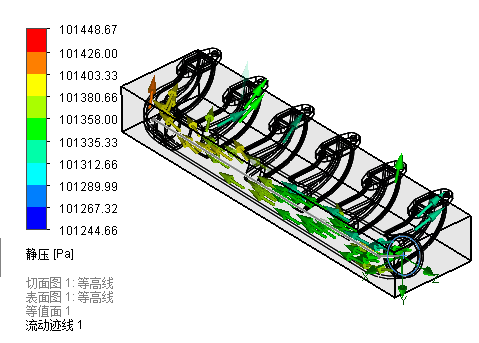检查模型
流体分析类型：内部分析/外部分析
通过检查可判断模型是否具备流体仿真的条件：内部分析要求要是一个密闭的空间，现在的结果是：失败，不满足内部流体分析的前提
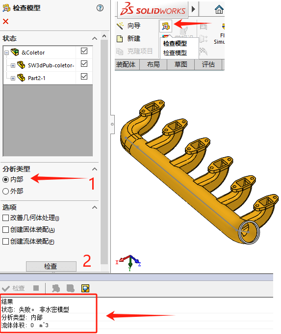如果开口较多且不清楚是否开口位置，可以在检查失败后的【泄露跟踪】里，进行软件检查
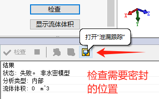 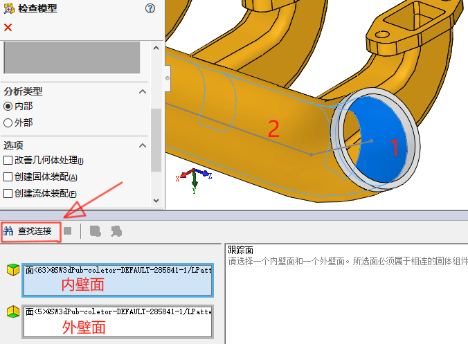 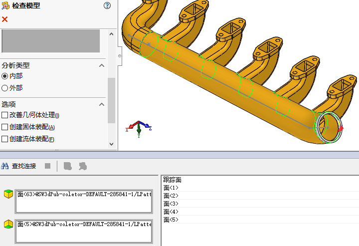创建端盖
在空腔开口处，我们需要进行【创建端盖】进行密封处理
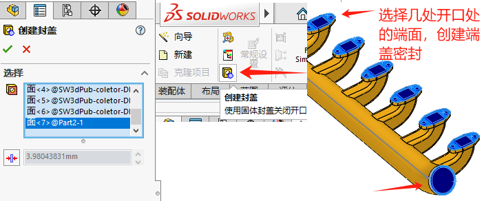 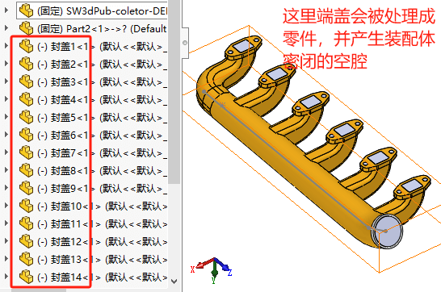再次检查流体内部空腔的可行性：此时就是成功，并有密闭空腔的体积显示
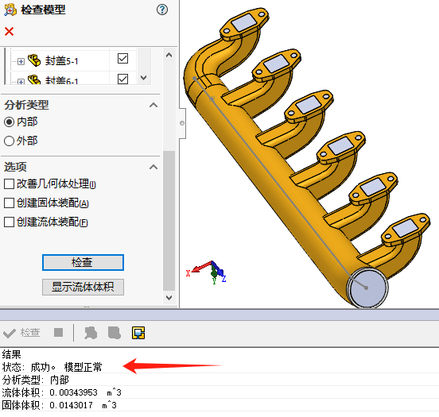显示流体区域：
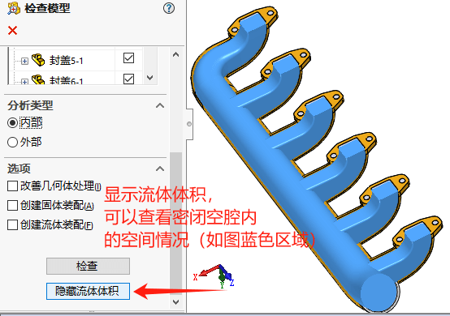创建项目
利用向导创建流体分析项目

项目名称

单位系统
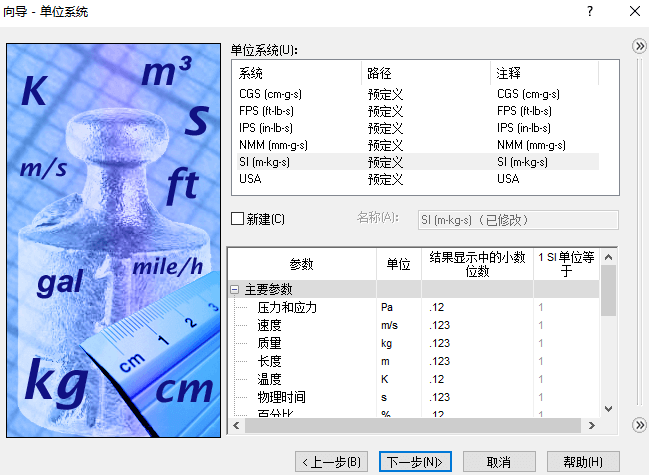分析类型

默认流体类型
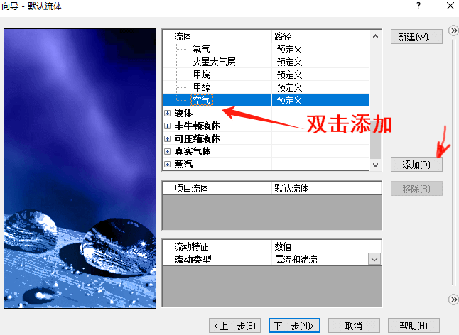 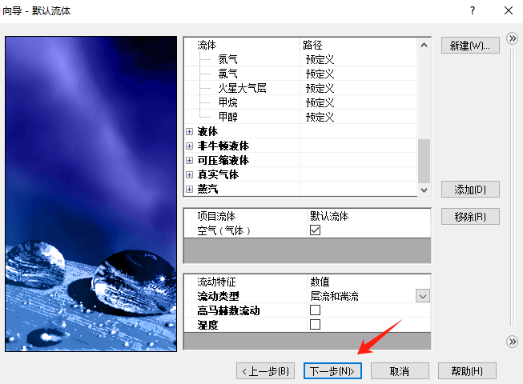壁面条件

初始条件
对这个分析来说，我们可以按默认定义进行
 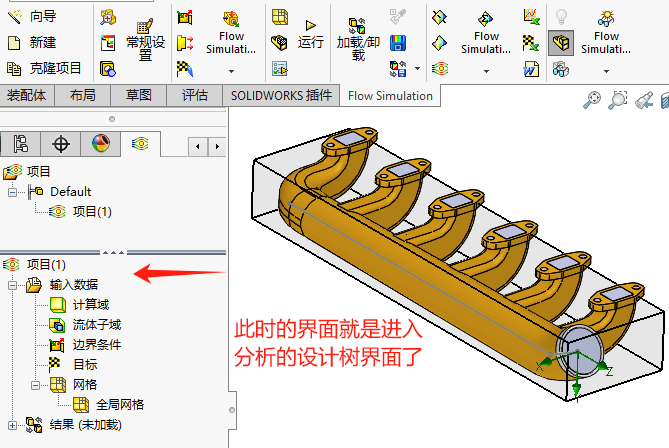
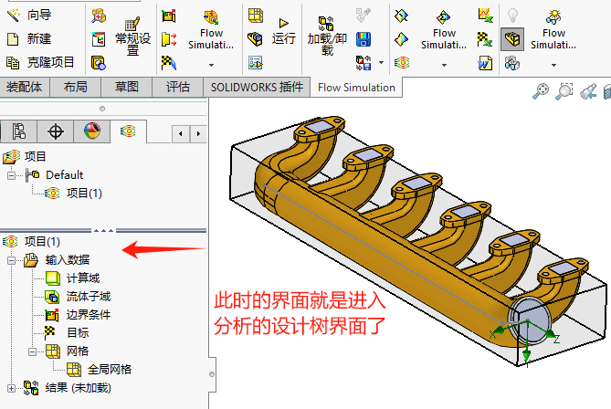
边界条件
边界条件的出入口面需要和流体空间接触的内面。用剖切面
把内表面显示出来，方便选取
加载出口边界条件
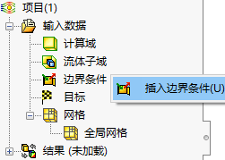作为开口位置，我们不对其进行流体输入输出的人为控制，所以可以按环境压力来决定其状态。（和大气压保持一致即可）
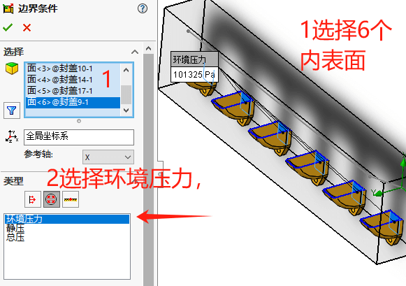加载入口边界条件
 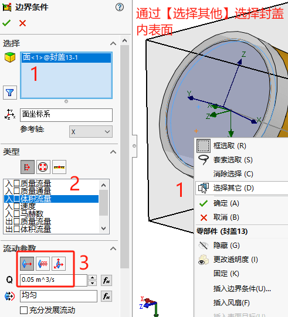
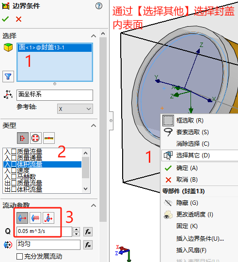
添加目标
我们想知道表面流出的流速情况，可以选择【插入表面目标】
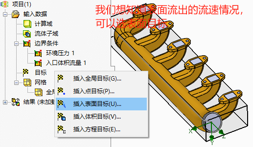 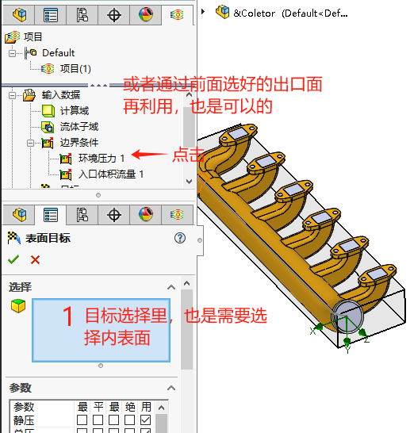点击边界添加的对象，也是能将其选择到【目标】选择中的。
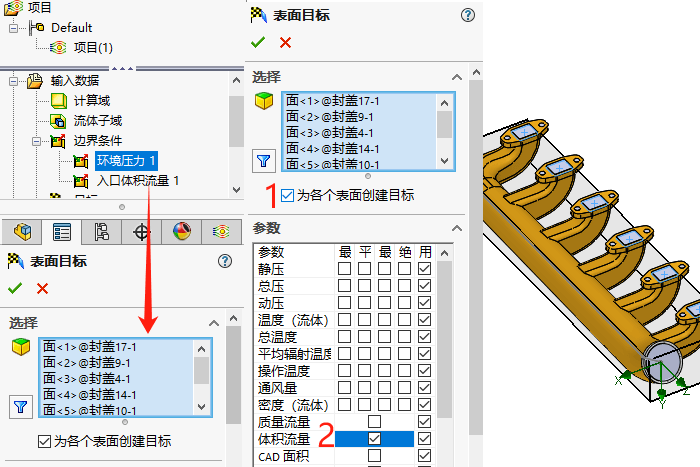插入方程目标
另外，我们也考虑将6个出口的体积流量进行方程式的求和，来验证入口的流量是否会等于【方程目标】求和6个出口的流量。
1 | {SG体积流量1}*{SG体积流量2}*{SG体积流量3}*{SG体积流量4}*{SG体积流量5}*{SG体积流量6} |
运行计算
运行一个分析查看结果
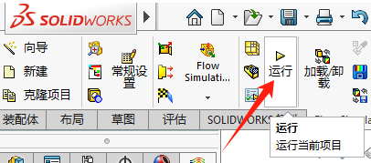 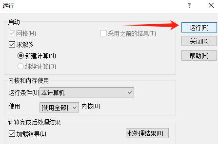查看结果
切面图
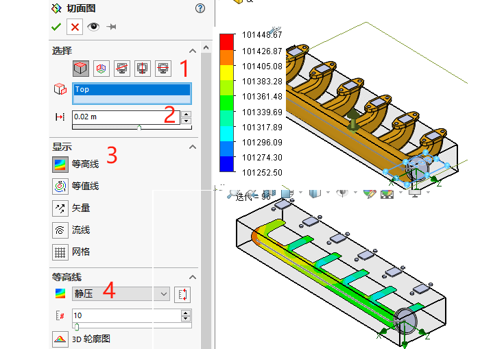表面图： 和切面类似，只是这个是曲面的表面，上面是切面的平面

等值面：查看在某个目标条件下，显示达到要求的值的面区域
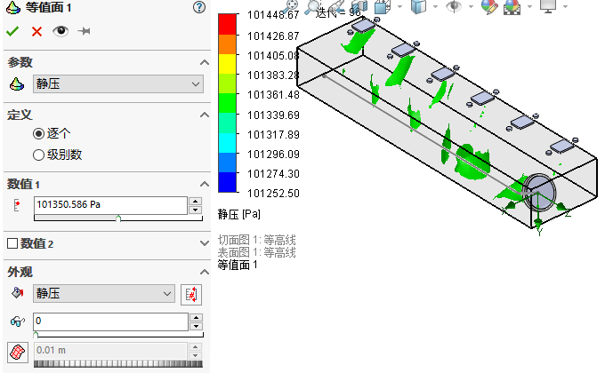流动迹线
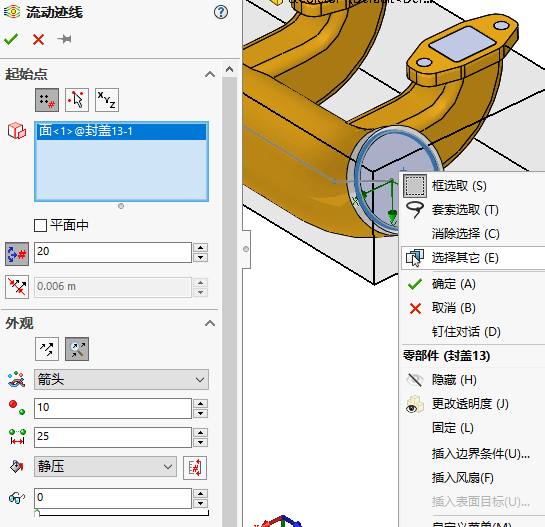粒子研究
点参数
表面参数
体积参数
XY 图
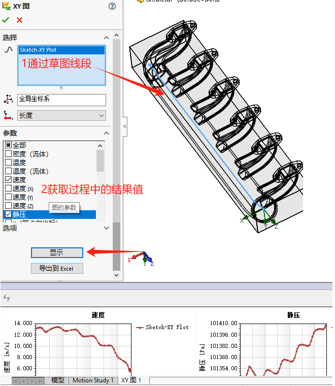目标图：相比流动轨迹图，会从数值上提供一种参考，从中我们也能看到在流量1出口的流量最小
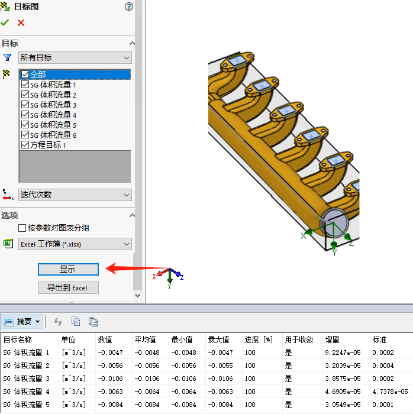报告
动画
导出结果